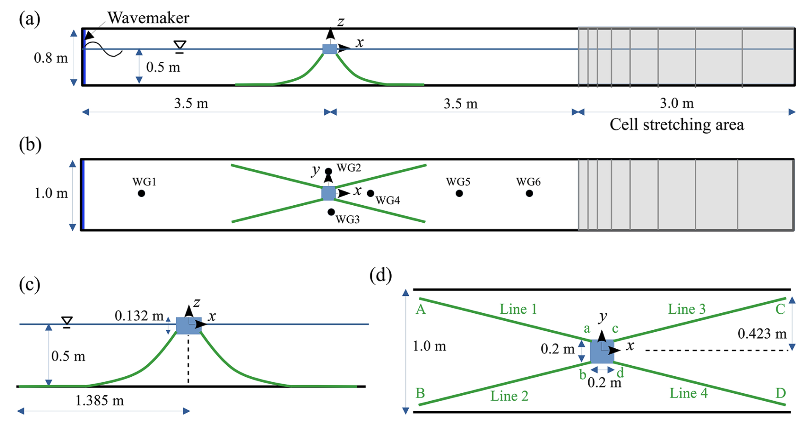
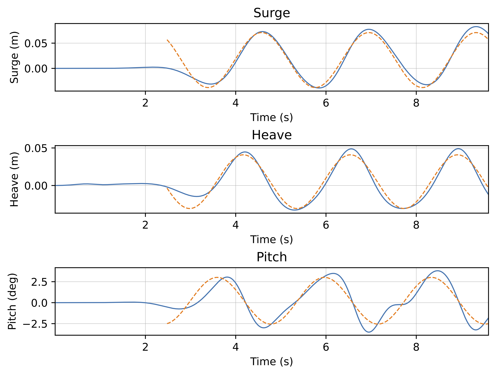

浮體與繫纜分析–專題研究計算案例規劃
Table of Contents
1. 研究目的
本專題以 foamMooring 工具箱為基礎，模擬單一矩形浮體（floating body）在不同波浪條件下的運動響應。藉由系統性地改變波浪週期與波高，分析浮體在三自由度運動（3-DoF） 下的 RAO（Response Amplitude Operator） 特性，了解浮體對波浪頻率的動態反應，並探討共振現象與繫泊系統的影響。
研究結果可作為：
- 浮體動力行為的初步驗證；
- 對照不同繫泊剛度或幾何設定的參考；
- 後續延伸研究（例如多浮體干涉、風浪耦合等）的基礎資料。
2. 基準模擬條件概述
根據 Chen and Hall (2022) 的單一浮體案例，本研究採用相同的幾何、繫泊與水槽條件，改變波浪週期與波高兩個主要參數。
2.1. 模擬區域設定

Figure 1: Chen and Hall (2022) 之模擬區域示意圖 (3D)。
模擬區域為上圖 (Chen and Hall, 2022) 之二維版本，亦即 y 方向設為均勻。
2.2. 基礎浮體條件
- 浮體之 x 方向寬度 \(2b = 0.2~\mathrm{m}\)
- 浮體之 y 方向跨度 \(0.2~\mathrm{m}\)
- 浮體之 z 方向高度 \(0.132~\mathrm{m}\)
- 初始吃水深度 \(d = 0.0786~\mathrm{m}\)
- 初始出水深度 \(d' = 0.0534~\mathrm{m}\)
- 浮體質量 \(3.16~\mathrm{kg}\)
- 質量中心 \((x, y, z) = (0, 0, -0.0126)~\mathrm{m}\)
- 浮體慣性矩 (Ixx, Iyy, Izz) = \((0.015, 0.015, 0.021)~\mathrm{kg\, m^2}\)
- 靜止水深 \(h = 0.5~\mathrm{m}\)
2.3. 基礎繫泊條件
- 繫纜單位長度質量 \(0.607~\mathrm{g/cm} = 0.0607~\mathrm{kg/m}\)
- 繫纜直徑 \(0.003656~\mathrm{m}\)
- 繫纜長度 \(1.455~\mathrm{m}\)
- 繫纜軸向剛度 (axial stiffness) \(29~\mathrm{N}\)
- 繫纜導纜器 (fairlead, 與浮體連接處) \((x, y, z) = (\pm 0.1, \pm 0.1, -0.0736)~\mathrm{m}\)
- 繫纜錨定處 (ahcnor, 與底床連接處) \((x, y, z) = (\pm 1.385, \pm 0.423, -0.5)~\mathrm{m}\)
2.4. Chen and Hall (2022) 之波浪條件
| 編號 | 週期 T (s) | 波高 H (m) | 波長 L (m) | 波尖銳度 H/L | 相對水深 h/L |
|---|---|---|---|---|---|
| H12T18 | 1.8 | 0.12 | 3.57 | 0.0336 | 0.140 |
| H12T20 | 2.0 | 0.12 | 4.06 | 0.0296 | 0.123 |
| H15T18 | 1.8 | 0.15 | 3.57 | 0.0420 | 0.140 |
以相對水深 \((h/L)\) 來分類，以上波浪均屬中間水深波 (intermediate water waves)。波浪尖銳度 (wave steepness) \(H/L\) 與波浪的非線性程度有關，但並非一個獨立的分類指標。相對水深之分類為：
- 深水波: \(h/L > 1/2\)
- 中間水深波: \(1/20 < h/L < 1/2\)
- 淺水波: \(h/L < 1/20\)
3. 計算條件設定
3.1. 浮體幾何與波浪參數計算程式
- 浮體幾何條件：見資料夾
tools/中的 floating body.ipynb。 - 波浪條件：見資料夾
tools/中的 DispersionEq.ipynb。
3.2. 第一組 (基準案例)
依據 Chen and Hall (2022) 基礎模擬條件，設置靜水深 \(h = 0.5~\mathrm{m}\), 浮體半寬 \(b = 0.1~\mathrm{m}\)。
- 浮體寬深比 \(b/d = 1.2723\)
- 浮體出水/吃水深比 \(d'/d = 0.6794\)
- 浮體寬度水深比 \(b/h = 0.2\)
- 浮體吃水深與靜水深比 \(d/h = 0.1572\)
其他參數為：
Water density rho_w = 1000.0 kg/m³ Computed solid density rho_s = 595.455 kg/m³ Geometric center z_c = -0.01260 m (measured from still water surface) Mass m = 3.14400 kg Ixx = 0.01505 kg·m² Iyy = 0.01505 kg·m² Izz = 0.02096 kg·m²
以波數 (wave number) \(k = 2\pi/L\) 之倒數為長度之無因次尺度，其中 \(L\) 為波長。改變波浪週期 \(T\) 可得到不同之 \(k\) 值。規劃相對之浮體寬為 \(kb = 0.3 \sim 1.2\), 波浪尖銳度 \(ka = 0.05, 0.1\), 其中 \(a = H/2\) 為入射波振幅。計算例設定如下表：
| No. | kb | ka | H (m) | L (m) | T (s) |
|---|---|---|---|---|---|
| 1 | 0.30 | 0.05 | 0.0333 | 2.0944 | 1.217 |
| 2 | 0.40 | 0.05 | 0.0250 | 1.5708 | 1.022 |
| 3 | 0.50 | 0.05 | 0.0200 | 1.2566 | 0.903 |
| 4 | 0.60 | 0.05 | 0.0167 | 1.0472 | 0.821 |
| 5 | 0.70 | 0.05 | 0.0143 | 0.8976 | 0.759 |
| 6 | 0.80 | 0.05 | 0.0125 | 0.7854 | 0.709 |
| 7 | 0.90 | 0.05 | 0.0111 | 0.6981 | 0.669 |
| 8 | 1.00 | 0.05 | 0.0100 | 0.6283 | 0.634 |
| 9 | 1.10 | 0.05 | 0.0091 | 0.5712 | 0.605 |
| 10 | 1.20 | 0.05 | 0.0083 | 0.5236 | 0.579 |
| 11 | 0.30 | 0.10 | 0.0667 | 2.0944 | 1.217 |
| 12 | 0.40 | 0.10 | 0.0500 | 1.5708 | 1.022 |
| 13 | 0.50 | 0.10 | 0.0400 | 1.2566 | 0.903 |
| 14 | 0.60 | 0.10 | 0.0333 | 1.0472 | 0.821 |
| 15 | 0.70 | 0.10 | 0.0286 | 0.8976 | 0.759 |
| 16 | 0.80 | 0.10 | 0.0250 | 0.7854 | 0.709 |
| 17 | 0.90 | 0.10 | 0.0222 | 0.6981 | 0.669 |
| 18 | 1.00 | 0.10 | 0.0200 | 0.6283 | 0.634 |
| 19 | 1.10 | 0.10 | 0.0182 | 0.5712 | 0.605 |
| 20 | 1.20 | 0.10 | 0.0167 | 0.5236 | 0.579 |
3.3. 第二組 (較大波高)
設定波浪尖銳度 \(ka = 0.1, 0.2\), 其餘條件如第一組。計算例設定如下表：
| No. | kb | ka | H (m) | L (m) | T (s) |
|---|---|---|---|---|---|
| 21 | 0.30 | 0.20 | 0.1333 | 2.0944 | 1.217 |
| 22 | 0.40 | 0.20 | 0.1000 | 1.5708 | 1.022 |
| 23 | 0.50 | 0.20 | 0.0800 | 1.2566 | 0.903 |
| 24 | 0.60 | 0.20 | 0.0667 | 1.0472 | 0.821 |
| 25 | 0.70 | 0.20 | 0.0571 | 0.8976 | 0.759 |
| 26 | 0.80 | 0.20 | 0.0500 | 0.7854 | 0.709 |
| 27 | 0.90 | 0.20 | 0.0444 | 0.6981 | 0.669 |
| 28 | 1.00 | 0.20 | 0.0400 | 0.6283 | 0.634 |
| 29 | 1.10 | 0.20 | 0.0364 | 0.5712 | 0.605 |
| 30 | 1.20 | 0.20 | 0.0333 | 0.5236 | 0.579 |
| 31 | 0.30 | 0.50 | 0.3333 | 2.0944 | 1.217 |
| 32 | 0.40 | 0.50 | 0.2500 | 1.5708 | 1.022 |
| 33 | 0.50 | 0.50 | 0.2000 | 1.2566 | 0.903 |
| 34 | 0.60 | 0.50 | 0.1667 | 1.0472 | 0.821 |
| 35 | 0.70 | 0.50 | 0.1429 | 0.8976 | 0.759 |
| 36 | 0.80 | 0.50 | 0.1250 | 0.7854 | 0.709 |
| 37 | 0.90 | 0.50 | 0.1111 | 0.6981 | 0.669 |
| 38 | 1.00 | 0.50 | 0.1000 | 0.6283 | 0.634 |
| 39 | 1.10 | 0.50 | 0.0909 | 0.5712 | 0.605 |
| 40 | 1.20 | 0.50 | 0.0833 | 0.5236 | 0.579 |
3.4. 第三組 (寬浮體)
增加浮體寬度，設定半寬 \(b = 3d = 0.236~\mathrm{m}\), 其餘尺寸參數不變，靜水深仍為 \(h = 0.5~\mathrm{m}\):
- 浮體寬深比 \(b/d = 3\)
- 浮體出水/吃水深比 \(d'/d = 0.6794\)
- 浮體寬度水深比 \(b/h = 0.472\)
- 浮體吃水深與靜水深比 \(d/h = 0.1572\)
- 繫纜導纜器 (fairlead, 與浮體連接處) \((x, y, z) = (\pm 0.236, \pm 0.1, -0.0736)~\mathrm{m}\)
其他參數為：
Water density rho_w = 1000.0 kg/m³ Computed solid density rho_s = 595.455 kg/m³ Geometric center z_c = -0.01260 m (measured from still water surface) Mass m = 7.41984 kg Ixx = 0.03551 kg·m² Iyy = 0.14853 kg·m² Izz = 0.16248 kg·m²
規劃相對之浮體寬為 \(kb = 0.3 \sim 1.2\), 波浪尖銳度 \(ka = 0.05, 0.1\), 其中 \(a = H/2\) 為入射波振幅。計算例設定如下表：
| No. | kb | ka | H (m) | L (m) | T (s) |
|---|---|---|---|---|---|
| 41 | 0.30 | 0.05 | 0.0787 | 4.9428 | 2.374 |
| 42 | 0.40 | 0.05 | 0.0590 | 3.7071 | 1.855 |
| 43 | 0.50 | 0.05 | 0.0472 | 2.9657 | 1.555 |
| 44 | 0.60 | 0.05 | 0.0393 | 2.4714 | 1.361 |
| 45 | 0.70 | 0.05 | 0.0337 | 2.1183 | 1.226 |
| 46 | 0.80 | 0.05 | 0.0295 | 1.8535 | 1.127 |
| 47 | 0.90 | 0.05 | 0.0262 | 1.6476 | 1.050 |
| 48 | 1.00 | 0.05 | 0.0236 | 1.4828 | 0.989 |
| 49 | 1.10 | 0.05 | 0.0215 | 1.3480 | 0.938 |
| 50 | 1.20 | 0.05 | 0.0197 | 1.2357 | 0.895 |
| 51 | 0.30 | 0.10 | 0.1573 | 4.9428 | 2.374 |
| 52 | 0.40 | 0.10 | 0.1180 | 3.7071 | 1.855 |
| 53 | 0.50 | 0.10 | 0.0944 | 2.9657 | 1.555 |
| 54 | 0.60 | 0.10 | 0.0787 | 2.4714 | 1.361 |
| 55 | 0.70 | 0.10 | 0.0674 | 2.1183 | 1.226 |
| 56 | 0.80 | 0.10 | 0.0590 | 1.8535 | 1.127 |
| 57 | 0.90 | 0.10 | 0.0524 | 1.6476 | 1.050 |
| 58 | 1.00 | 0.10 | 0.0472 | 1.4828 | 0.989 |
| 59 | 1.10 | 0.10 | 0.0429 | 1.3480 | 0.938 |
| 60 | 1.20 | 0.10 | 0.0393 | 1.2357 | 0.895 |
計算案例 (No. 41) 設定檔見 tutorials/case_41 。初步計算成果如下：

Figure 2: Case No. 41 計算結果。
4. 波浪參數意義與物理說明
4.1. 波浪週期 T
波浪週期為相鄰波峰通過同一點所需的時間，決定波浪頻率與能量分佈。
- 短週期波 (\(T < 1.4~\mathrm{s}\)): 波浪變化快，主要影響 surge 運動；
- 長週期波 (\(T > 1.6~\mathrm{s}\)): 波浪能量集中，容易引發浮體共振。
4.2. 波高 H
波高為波峰與波谷之間的垂直距離，反映波能強度。波高越大，浮體受力與運動幅度越明顯。
- 小波高：系統近似線性，可用於驗證理論模型。
- 大波高：可能產生非線性效應，例如阻尼增加或漂移運動。
4.3. 波長 L
波長代表波峰與波峰之間的水平距離，與週期相關，由頻散關係：
\[ \omega^2 = g k \tanh (kh) \]
可求得 \(L = 2\pi / k\)。波長越長，波浪越「平緩」，對浮體的影響主要為低頻大振幅運動。
4.4. 波陡度 H/L
波陡度描述波浪的相對「尖銳程度」，在水力學上常用來判斷波浪是否可能破碎。一般而言：
- \(H/L < 0.02\) 為「緩波」；
- \(0.02 < H/L < 0.05\) 為「中等波」；
- \(H/L > 0.05\) 則為「陡波」區域，數值模擬需特別注意穩定性。
4.5. 水深 h
水深影響波的傳播速度與波壓分佈。若 \(kh > \pi\) 為深水波；若 \(kh < \pi/10\) 為淺水波。本研究之 \(h = 0.6~\mathrm{m}\)，屬於中等深度（intermediate depth），適合觀察深水與淺水效應交替之情況。
5. RAO 的意義與計算
5.1. RAO 的基本定義
RAO（Response Amplitude Operator）為浮體在規律波作用下之線性響應特性，表示浮體運動振幅與入射波振幅之比值。
若入射波為
\[ \eta(t) = A_I \cos(\omega t) \]
其中 \(A_I = H/2\) 為波振幅, \(\omega = 2\pi/T\) 為角頻率，則浮體運動可表示為：
\[ \xi(t) = \hat{\xi} \cos(\omega t - \phi) \]
RAO 定義為：
\[ \mathrm{RAO}(\omega) = \frac{\hat{\xi}}{A_I} e^{-i\phi} \]
常以其幅值與相位分別表示：
\[ \left|\mathrm{RAO}\right| = \frac{\hat{\xi}}{A_I}, \quad \angle\mathrm{RAO} = \phi \]
5.2. 三個自由度的 RAO 定義
定義為：
- Surge (沿 \(x\) 方向之水平運動): \(\left|\mathrm{RAO}_x \right| = \hat{x}/A_I\)
- Heave (沿 \(z\) 方向之垂直運動): \(\left|\mathrm{RAO}_z \right| = \hat{z}/A_I\)
- Pitch (沿 \(y\) 方向之角度轉動，順時針為正): \(\left|\mathrm{RAO}_\theta\right| = (\hat{\theta} \times b)/A_I\)
其中：
- \(A_I\): 入射波振幅 (即波高的一半, \(H/2\))
- \(b\): 浮體半寬
- \(\hat{x}, \hat{z}\): Surge 與 heave 振幅 (m)
- \(\hat{\theta}\): Pitch 角度振幅 (rad)
註：Pitch RAO 的物理意義：將角度振幅乘以半寬，可換算為浮體兩端的升降位移振幅，再與入射波振幅相比。
5.3. 實際計算步驟
5.3.1. 輸入波參數
已知波高 \(H\), 週期 \(T\), 求波振幅 \(A_I = H/2\), 頻率 \(f = 1/T\)。
5.3.2. FFT 分析
對浮體各自由度時間序列（surge, heave, pitch）進行 FFT, 確認主頻是否與理論頻率一致。
5.3.3. 最小平方法擬合
在穩態時間段，使用理論頻率 \(f=1/T\) 擬合：
\[ \xi(t) = c + A\cos(2\pi f t) + B\sin(2\pi f t) \]
得：
\[ \hat{\xi} = \sqrt{A^2 + B^2}, \quad \phi = \tan^{-1}\left(\frac{B}{A}\right) \]
5.3.4. 計算 RAO
- Surge/Heave: \(\left|\mathrm{RAO}\right| = \hat{\xi}/A_I\)
- Pitch: \(\left|\mathrm{RAO}_\theta\right| = \hat{\theta} b / A_I\)
5.4. 結果解讀
- \(\left|\mathrm{RAO}\right| > 1\): 浮體運動振幅大於入射波，可能有共振效應。
- \(\left|\mathrm{RAO}\right| < 1\): 浮體運動受阻尼抑制。
- 相位角 \(\phi\) 表示運動相對於波面的相位差：
- \(\phi = 0°\): 運動與波面同相。
- \(\phi = 90°\): 運動落後波面四分之一週期。
6. 實驗步驟建議
- 先選定基準案例（T = 1.8 s, H = 0.12 m），確認模擬可正常收斂；
- 再依序執行各週期的掃描；
- 模擬完成後，取浮體 3DoF 運動時間序列；
- 計算各自由度的 RAO（振幅比與相位差）;
- 繪製 RAO vs. 週期圖，觀察共振行為；
- 彙整結果，分析波浪頻率與振幅對浮體動態特性的影響。
7. 分析與討論方向
- 不同波陡度對浮體運動的非線性效應；
- 短波與長波下的共振頻率差異；
- 吃水深度與繫泊剛度對 RAO 峰值的影響；
- CFD 模擬與理論模型的比較（例如 Morison 方程或線性勢流理論）。
8. 學習重點
- 理解浮體受波激勵運動的機制；
- 熟悉 OpenFOAM 與 foamMooring 的模擬流程；
- 學習如何設計與執行參數掃描；
- 具備後處理分析（RAO 計算、頻譜分析）的能力；
- 建立對海洋結構物動力行為的直觀理解。
9. 延伸方向
完成本階段後，可考慮進一步主題：
- 探討繫泊剛度對 RAO 曲線的變化；
- 研究多浮體間的水動力干涉；
- 考慮風浪同時作用（加入定常風載）；
- 嘗試使用不同繫泊模型（MoorDyn vs MAP++）比較。
10. Overset 計算執行
10.1. 計算指令
在案例主目錄中執行 ./Allrun.pre, 可執行平行計算。如需進行單核心計算，則將其修改為
#!/bin/sh cd "${0%/*}" || exit # Run from this directory . ${WM_PROJECT_DIR:?}/bin/tools/RunFunctions # Tutorial run functions #------------------------------------------------------------------------------ # Mesh floating body (cd floatingBody && ./Allrun.pre) ## Add background mesh (Parallel computing) #(cd background && ./Allrun.pre 1) # Add background mesh (Single-Core computing) (cd background && ./Allrun.pre) #------------------------------------------------------------------------------
10.2. 平行計算設定
以 tutorials/overset_parallel/ 為例：
10.3. 計算分割數
設定為 4 區，可於 background/system/decomposeParDict 中設定。
11. ParaView 繪圖與前後處理
11.1. ParaView 繪圖
11.1.1. 直接開啟 state 檔
在 background 資料夾中的 FV.pvsm 檔，為 ParaView 之 State 檔案，可以在 OpenFOAM 中使用 load state 選項開啟，即可得到已經設定好的繪圖頁面。
11.1.2. 波浪流場與物體繪製流程
如想重新繪製，可依下列步驟。
開啟
aa.foam檔案：paraview aa.foam
- 如要繪製動壓場，可選擇
p_rgh並使用Surface繪製。 - 欲分離出物體，需透過
Threshold工具：- 從
Pipeline Browser處，在aa.foam點選Threshold. 出現Threshold 1。在Threshold 1中的Properties之Scalars選擇ZoneID, 並設定其值之Minimum = 0,Maximum = 0。顯示此Threshold 1並關閉aa.foam, 可顯示出背景流體。 - 在
Threshold 1中再做一次Threshold工具，出現Threshold 2。在Threshold 2處之Properties之Scalars選擇cellTypes, 設定值Minimum = 0,Maximum = 1。開啟Threshold 2並關閉Threshold 1, 可出現扣除浮體網格之背景流場。 - 在
aa.foam點選Threshold, 出現Threshold 3。在Threshold 3中的Properties之Scalars選擇ZoneID, 並設定其值之Minimum = 1,Maximum = 1。點開Advanced Properties, 在Transforming中設定Translation = (0, -0.2, 0)。顯示此Threshold 3可出現浮體附近的流場。 - 僅開啟
Threshold2與Threshold3, 並在Orientation Axes中點選Camera Paralle Projection, 可出現浮體被挖空之波浪流場。
- 從
11.1.3. 繪製繫纜線
在 ParaView 中開啟纜線的 VTK 檔。以 Overset 案例為例，VTK 檔位於
background/Mooring/VTK/mdv2_pt.pvd
- 在
Pipeline Browser中點選mdv2_pt.vtk.pvd, 使用Transforming將纜線平移到與浮體一樣的位置。
11.2. ParaView 動畫輸出
11.2.1. 安裝 ffmpeg
若系統尚未安裝 ffmpeg，可於終端機執行以下指令安裝：
sudo apt update sudo apt install ffmpeg -y
安裝完成後可輸入以下命令檢查版本：
ffmpeg -version
若顯示版本號 (例如 ffmpeg version 6.x)，即表示安裝成功。
11.2.2. OpenFOAM 輸出動畫影格
在 OpenFOAM 中開啟計算成果圖，執行以下步驟：
- 點選 File → Save Animation。
- 在 File type 中選擇 PNG files (或 JPEG)。
設定輸出路徑，例如輸出至新增目錄
animation中:/home/user/foam_case/animation/frame_####.png
ParaView 會自動輸出連續編號的影格，如
frame_0000.png,frame_0001.png, …- 可調整：
- Frame rate (FPS)：建議 10–30 fps
- Resolution：如 1920×1080
- Frame window：選擇輸出時間範圍
- 按下 OK 開始輸出。
11.2.3. 使用 ffmpeg 合成影片
在終端機中進入影格資料夾：
cd /home/user/foam_case/animation
若連續編號的影格檔案為 frame_0000.png, frame_0001.png, …, 執行以下指令產生影片：
ffmpeg -framerate 20 -i frame_%04d.png -c:v libx264 -pix_fmt yuv420p animation.mp4
參數說明：
-framerate 20: 播放速率 20 幀/秒。-i frame_%04d.png: 輸入影格檔案格式。-c:v libx264: 使用 H.264 影片編碼。-pix_fmt yuv420p: 確保通用播放器皆可播放。
若連續編號的影格檔案為 frame.0000.png, frame.0001.png, …, 則執行以下指令產生影片：
ffmpeg -framerate 20 -i frame.%04d.png -c:v libx264 -pix_fmt yuv420p animation.mp4
11.2.4. 可選：影片壓縮與縮放
若輸出影片過大，可加入壓縮參數：
ffmpeg -framerate 15 -i frame_%04d.png -vf "scale=1280:-1" -c:v libx264 -crf 23 animation_compressed.mp4
11.2.5. 提示
- 若影格輸出過慢，可降低解析度或只輸出關鍵時間步。
- 可於 ParaView 的 View → Memory Inspector 檢查資源使用狀況。
若需循環播放影片，可在 ffmpeg 加上：
ffmpeg -stream_loop -1 -i animation.mp4 output_loop.mp4
11.3. 前、後處理之 Python 程式碼
前、後處理之 Python 程式碼 (Jupyter Notebook) prePostProcessing.ipynb 可進行以下計算與繪圖：
- 輸入波浪與水槽參數，計算建議之
endTime值。 - 繪出水面高程隨時間變化圖，其中無因次參數為入射波振幅及波浪週期。
- 繪出浮體之 3DoF 無因次振幅時間變化圖。
- 利用快速傅立葉轉換 (FFT) 與最小平方法擬合計算 RAO。
- 繪出繫纜錨定張力隨時間變化圖。
使用時，將 prePostProcessing.ipynb 複製到計算例之 background 資料夾，使用 Jupyter Notebook 開啟並逐步執行。此程式集可自動將 log.overInterDyMFoam 複製到 Plots 資料夾，並執行 extractMulti.sh 進行 3DoF 位移量之擷取。所繪圖形均存放於 Plots 資料夾。
程式碼放置位置：
- prePostProcessing.ipynb 放置於
background/中。 - extractMulti.sh 放置於
background/Plots/中。
相關位置如下：
case01/
└── background/
├── prePostProcessing.ipynb (在此目錄下執行即可)
├── log.overInterDyMFoam
├── ...
└── Plots/
├── extractMulti.sh
├── log.overInterDyMFoam (由background/ 中複製過來)
├── ***.pdf (圖檔)
└── logs/
├── t_vs_CoM (質心座標)
├── t_vs_orientation (方向角)
├── t_vs_linearV (速度)
└── t_vs_angularV (角速度)
11.4. 附註： Jupyter Notebook 安裝方法
如電腦中有安裝 Anaconda, 即可在 Anaconda Navigator 中開啟 Jupyter Notebook。
Anaconda 的安裝教學，可參見此連結：https://simplelearn.tw/anaconda-3-intro-and-installation-guide/
Jupyter Notebook 的完整介紹，可參見此連結。
12. 成果報告
12.1. 內容架構
- 摘要
- 1 研究背景及目的
- 1.1 研究背景與動機
- 1.2 文獻回顧
- 1.3 研究目的與方法
- 基本方程式與數值方法
- 基本方程式 (Chen and Hall 2022, Sec. 2)
- 數值模式簡介
- OpenFOAM 簡介
- 繫纜系統工具庫 foamMooring 簡介 (Chen and Hall 2022, Che et al. 2024)
- 模式設置與驗證
- 模式設置
- 模式驗證
- 成果分析
- 計算案例說明
- 分析方法簡介
- RAO 定義
- FFT 之主頻振幅分析
- 波浪條件之效應
- RAO 分析
- 纜繩張力分析
- 浮體寬度之效應
- RAO 分析
- 纜繩張力分析
- 結論與討論